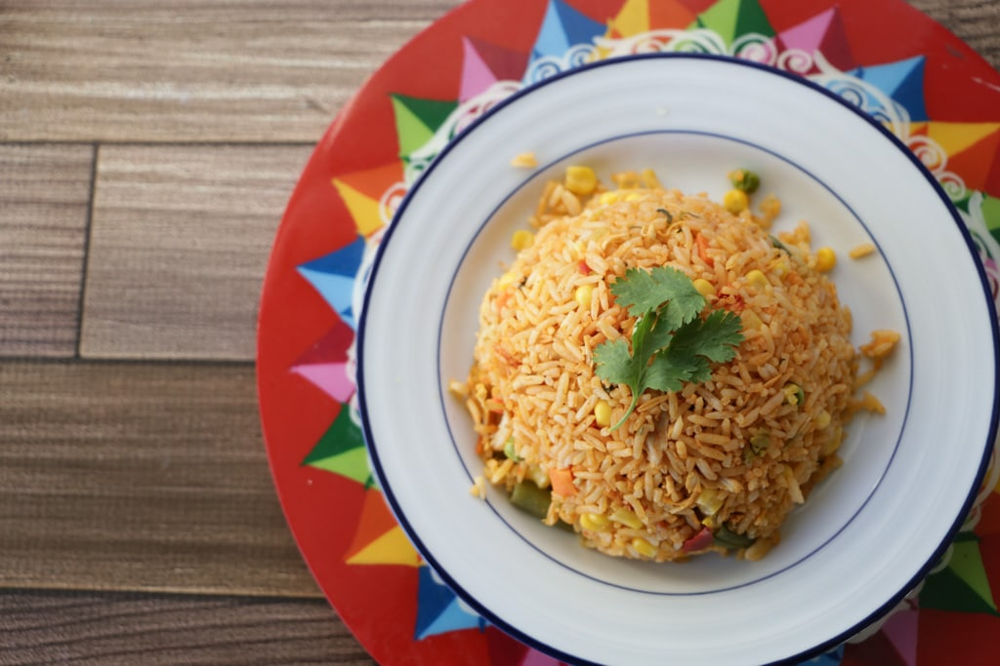

Rice with Chicken

Ok so for you non-Spanish speakers out there arroz con pollo is Spanish for chicken with rice.
You might be picturing some white rice with chicken pieces next to it- and that is definitely not what chicken and rice is in Latin America.
Traditional Latin America arroz con pollo is a gorgeously colored dish that looks similar to Asian fried rice- except with chicken too!
We color the rice with achiote and add cooked shredded chicken.
Ingredients
- Chicken breast, shredd
- Chicken broth
- Olive oil
- Onion chopped
- Red pepper chopped
- Carrots chopper
- Celery chopped
- Garlic minced
- Cilantro (optional)
- Salsa Alfaro (English Sauce)
Steps
- Get the skillet nice and hot on medium high heat and add about 1 tablespoon extra virgin olive oil.
- Cook the chicken on each side, seasoning well with salt and pepper.
- Only flip it once and make sure to wait until the chicken releases itself from the pan.
- Once the outside starts to brown nicely, it should be fairly easy to flip. Don’t overcook it. Usually a few minutes on each side is all you need.
- After you’ve prepared the chicken, chop the onions, pepper, celery, carrots and mince the garlic.
- The next step, sautéing, goes quickly so it’s nice to have everything ready in advance.
- Add the chicken broth to a medium saucepan with 1 teaspoon salt and 1 teaspoon extra virgin olive oil. Skip the salt if you’re using prepared broth that is already salty.
- Bring to a boil on high heat, then add the rice and stir.
- Reduce heat to medium and cook uncovered (it should be at a low boil), stirring only every few minutes.
- While the rice is cooking, heat a medium skillet on medium high and add 1 tablespoon extra virgin olive oil.
- Add the onions, sauté for a couple of minutes, then add the pepper and celery.
- After a couple of minutes more, add the carrots. Be sure to season everything with salt and pepper.
- Once the carrots begin to soften, add the garlic and cook for a minute more.
- When the veggies are al dente (cooked but still firm), add the achiote paste.
- When the veggies are al dente (cooked but still firm), add the achiote paste.
- Then add the shredded chicken and mix.
- Next, you’ll add the cooked rice, Salsa Alfaro, and fresh cilantro.
- Mix well until everything is coated in the achiote. Season with salt and pepper as needed.